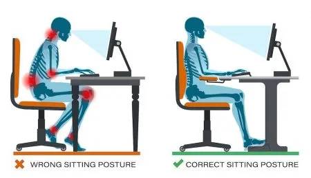

Before I actually learned to type with 10 fingers
Before I actually learned to type with 10 fingers, I had seen many different articles titled "How to type fast" and honestly had never cared about them. I had never felt the need to type faster since I didn't see myself working as a bank clerk or one of those people who write everything that happens in a court. However, I was wrong. Typing fast has many benefits that I hadn't thought about before. First of all, it's cool. I can guarantee that if you type +80 WPM your coworkers are going to be shocked and impressed. Secondly, it helps you to focus only on the content you want to write about and not on how to write it. Your brain is going to use less energy figuring out how to type, because typing would be part of your muscle memory. I can't stress the second reason enough. The faster you type, the easier it is to think about your idea and the less tiring it is.
Practice letters
The first step is to learn which finger you should use for each character. TypingClub is a great place to start. It shows you the way step by step. I remember that I completed all lessons covering all 26 letters and then moved on to practicing typing long texts. My speed after practicing all 26 letters for the first time was 15–20 WPM.
Pay attention to correct form
- While typing, your wrists should be elevated, not resting on the keyboard.
- Sit tall and don't hunch over the laptop.
- Take regular breaks every 20–30 minutes to avoid eye strain.

Work on speed and accuracy
Now that you know how to find every letter, you need to improve your speed and accuracy. High speed with low accuracy can be frustrating, so aim for around 90% accuracy while increasing speed gradually. Use sites like Monkeytype to practice with different timers and word lists.
- If your current speed is less than 25 WPM: practice with common words to build muscle memory.
- 25–35 WPM: use 60s sessions to build stamina.
- 35–40 WPM: push beyond comfort occasionally; then practice to raise accuracy.
- 40+ WPM: practice the top 1K words and quotes for fluency.
Tips for getting better every day
- Practice at least 20 minutes daily.
- Record progress to stay motivated.
- Focus on form first, speed follows.